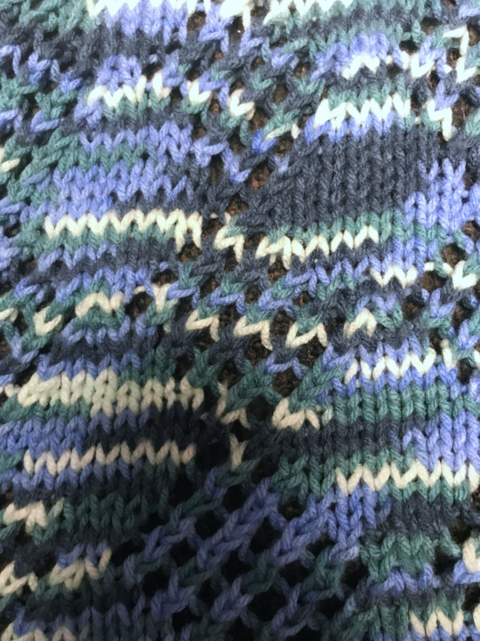

My Hobbies
Knitting

A week before the semester started, I got myself back into knitting. I have knit things before, such as a scarf the year before, but I stopped after I finished it. This time, I hope to continue knitting.
I recently finished a 5 foot by 5 foot (roughly) throw blanket. It is by far the largest knitting project I've ever done. It took me over a month of work, but I am satisfied with the result. It consists mainly of a stockinette stitch, broken up by a basic lace pattern forming columns of diamonds down the length of the blanket. The yarn I used was pretty cheap. It does not feel nearly as soft as other yarns do. However, it looks alright and pretty colorful. It transitions between a very light (nearly white) blue, blue-green, sky blue, and a dark blue-green color repeatedly. The blanket is rather visually detailed, with the colors changing suddenly on every square inch, and the added texture of the lace pattern.
For this project, I had to learn how to read knitting instructions (which are full of acronyms that I did not understand a month ago). I had to learn how to knit two stitches together. Knitting two stitches together (which is a decrease), followed immediately after by a yarn over (which is an increase), creates the base of the lace pattern. Alternating spans of knit stitches and this lace stitch on the right side, and rows of purl stitches on the wrong side, gives it a really awesome look. Around the edges, it is surrounded by a garter stitch, which is just knitting on both the right and the wrong side of the blanket.
In the future, I hope to learn more patterns and knit more projects. I'm thinking about knitting a basic cap, which I might wear when the weather gets colder. I will use some light grey yarn I picked up that was much softer than the stuff I used for the blanket. A pattern I want to learn is the honeycomb brioche stitch. Not only do I love the name, but it also looks really awesome and it has some nice thickness to it. I think it would work well as a scarf. I've tried to do it before, but for some reason it wasn't looking quite right. I also want to learn how to work with multiple colors. I think I understand how it would work in theory, with just swapping between which yarn strand is used for a stitch and leaving the other strand hanging on the wrong side of the item until it is needed again, but I am not fully sure, and I need to do more research into how it works.
(Please note: These photos are slightly edited. I had to tweak the color temperature of the photos to make them look more like what the blanket looks like in person.
Computers
I really like computers. A lot. I especially love older computers. The older, the cooler. The oldest computer I have is a laptop from the mid-90's. The early 90's are probably my favorite era in computers. I don't know much about anything older, but from what I've heard, it sounds extremely fascinating.
I also have an old Apple iBook G4. It also has a PowerPC processor, but from what I read online, it seems to be completely incapable of running Mac OS 9. What I find interesting about the device is that it has both a removable battery and a removable keyboard hiding some slots for hardware! I was genuinely so surprised that Apple allowed for users to remove that stuff in their older devices!
I have a few more old laptops. My favorite is an incredibly thick laptop (genuinely must be around 2 inches think). I think it came with Windows Me installed. Windows Me was probably the worst version of Windows ever released. That is exactly why I want to have a working Windows Me machine. I am consistently impressed with how modular older laptops were. Just about everything was easily accessible.
I have a laptop from around 2005 that I got from the school I work at. It was used by one of the IT staff back when I was a student. After he left, he left his laptop with the school. It sat unused and was going to be recycled, so I took it home with me. I thought it would be a little funny to install Gentoo Linux on it. I did manage to install it and get it working, but it involved a lot of compiling software. And I mean a lot. I had it compiling for around 24 hours straight. On a modern laptop, I would be afraid to spend so long compiling software on it, out of fear that it would overheat. However, the cooling was so good in this laptop, I don't think it got very hot, even after 24 hours.